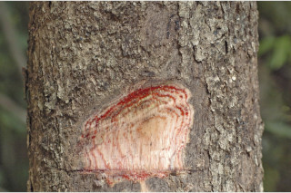
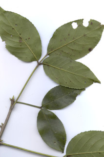

Images :




| Habit : | Large deciduous tree , up to 30 m tall. |
| Leaves : | Leaves compound , trifoliate , alternate , spiral ; stipule to 0.6 cm long, linear lanceolate , caducous ; rachis 5-15.5 cm long, pulvinate at base, terete , glabrous ; petiolule of side leaflets to 1 cm long, middle one to 3.5 cm long; leaflets elliptic to broadly elliptic , usually middle leaflet slightly larger, 7.5-13 x 3.5-9 cm, apex caudate or caudate - acuminate , base acute to rounded , margin crenate , coriaceous ; secondary_nerves 5-7 pairs, forked with glabrous domatia in axils; tertiary_nerves reticulo-percurrent , not prominent. |
| Inflorescence / Flower : | Inflorescence axillary panicles ; flowers unisexual , dioecious , green. |
| Fruit and Seed : | Berry , globose , 1.3 cm across; seeds 6-8, oblong , trigonous. |